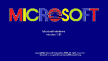

Microsoft Windows 1 |
|
|---|---|
|  |
Version :- 1.01
Release Date :- November 1985 Founder :- Bill Gates Comapany :- Microsoft |
|
This is where it all started for Windows. The original Windows 1 was released in November 1985 and was Microsoft’s first true attempt at a graphical user interface in 16-bit. Development was spearheaded by Microsoft founder Bill Gates and ran on top of MS-DOS, which relied on command-line input. It was notable because it relied heavily on use of a mouse before the mouse was a common computer input device. To help users become familiar with this odd input system, Microsoft included a game, Reversi (visible in the screenshot) that relied on mouse control, not the keyboard, to get people used to moving the mouse around and clicking onscreen elements. |
|